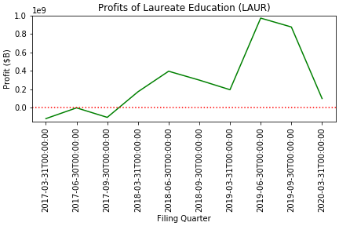

Laureate Education Case Study
Do publicly traded B Corps see an increase in profit as their impact score increases?

Laureate Education is currently the only publicly traded B Corp, but still offers an interesting case
study in whether increase in impact scores corresponds to an increase in profit.
According to a more normative theory of business, a company’s main objective is to maximize profits, and
indeed companies that are B-Certified also focus on revenue generation; a major tenet of B-Certification
is to “use profits and growth as a means to a greater end”. We wanted to look at how the profits of a
corporation change over the tenure of their certification and if there is any significant trend present.
There is only one publicly traded company that is B-Certified: Laureate Education, which operates over
150 universities worldwide. They were first B-Certified in 2015, went public on the NYSE on January 31,
2017 and were re-certified on December 1, 2017 (which is reflected in the graph “Profits of Laureate Education
(LAUR)” on the blue vertical line). While it’s hard to draw a conclusion based on a single case study, it is
clear that as Laureate has continued in their tenure being Certified, their profits have significantly increased,
until the first quarter of 2020, which also happens to be in the midst of the global COVID-19 pandemic. From this
one example it is quite evident that Laureate was able to maintain their Certification while still readily growing
and increasing their profits. It is important to note that their impact score did improve from their first certification
in 2015 to their recertification in 2017.